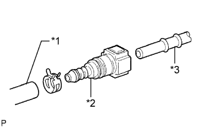
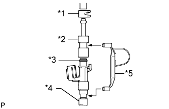
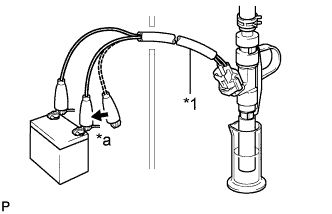

FUEL INJECTOR > INSPECTION |
| 1. INSPECT FUEL INJECTOR ASSEMBLY |
Measure the resistance according to the value(s) in the table below.
| Tester Connection | Condition | Specified Condition |
| 1 - 2 | 20°C (68°F) | 11.6 to 12.4 Ω |
Inspect the injection volume.
|  |
Connect SST to the fuel filter.
| *1 | SST (Hose) |
| *2 | SST (Fuel Tube Connector) |
| *3 | Fuel Filter |
|  |
Install the O-ring to the fuel injector.
Install SST and the tube to the fuel injector.
| *1 | SST (Clip) |
| *2 | SST (Adapter) |
| *3 | O-ring |
| *4 | Tube |
| *5 | SST (Clamp) |
Put the injector into a graduated cylinder.
Operate the fuel pump (Click here).
|  |
Connect SST (wire) to the injector and battery for 15 seconds, and then measure the injection volume with the graduated cylinder. Test each injector 2 or 3 times.
| *1 | SST (Wire) |
| *a | Connect |
Check for leakage.
In the condition above, disconnect the tester probes of SST (wire) from the battery and check for fuel leakage from the injector.